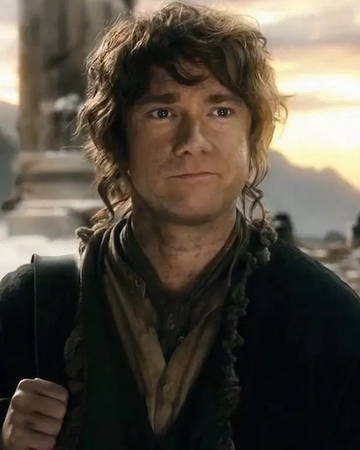

- 
- Name: Bilbo Baggins
- Born: 22 September, TA 2890
- Died: Unknown (Last sighting 29 September, TA 3021) (SR 1421)
- Gender: Male
- Race: Hobbit
- Spouse: Never Married
- Titles: Elf-friend, Ring-bearer, Burglar, The Fly who Stings the Spider, Barrel Rider
"If more of us valued food and cheer and song above hoarded gold, it would be a
merrier world." —Thorin, to (and about) Bilbo.
Bilbo Baggins was a hobbit of the Shire, the main protagonist of The Hobbit and a
secondary character in The Lord of the Rings.
Gandalf suggested to Thorin and Company that they hire Bilbo Baggins to be their
burglar in the Quest of Erebor, and later fought in the Battle of Five Armies.
Bilbo was also one of the bearers of the One Ring, and the first to voluntarily
give it up, although with some difficulty. He wrote many of his adventures in a book he called There and Back Again. Bilbo adopted his second-cousin-once-removed Frodo Baggins to be his heir after his parents, Drogo Baggins and Primula Brandybuck, drowned in the Brandywine River.
Bilbo was the first hobbit to become famous in the world at large, and one of
the few to set foot in the Undying Lands.
Biography:
Bilbo Baggins was born on September 22 by Shire Reckoning (around September 12-14 of our calendar), in the year 2890 of the Third Age. He was the only son of Bungo Baggins and Belladonna Took. In Hobbiton, Bungo Baggins constructed a spacious and luxurious Hobbit-hole for Belladonna, which they named Bag End. The family moved to their new home, where Bilbo would spend much of his life. As a young Hobbit, Bilbo was curious and eager for news of the outside world. The Istar wizard, Gandalf, took interest in this unusual quality in Bilbo during his visits to the Shire. Bilbo would later remember Gandalf's Firework displays in the dwelling of his mother's family at Great Smials. Bilbo apparently practiced his rock-throwing skills in his youth so much, that birds and squirrels fled the area whenever he bent down to pick up a rock. When Bilbo's father and mother died in TA 2926 and TA 2934 respectively, Bilbo became his own master and spent the next seven years living alone in Bag End. During this time, Bilbo grew fond of his life as a wealthy bachelor and acquired a reputation for respectability that the neighbors admired. In the year TA 2941, Bilbo, at the age of 51, was visited by Gandalf, whom he had not seen for quite some time, outside his home at Bag End. Gandalf invited Bilbo on an unspecified adventure, which was flatly refused by the hobbit, who bade the wizard a "Good morning", and went inside. Undeterred, Gandalf continued in his plan, sending thirteen dwarves, led by Thorin Oakenshield, to Bag End the very day. These dwarves, needing an additionally member for their company, initially came by pairs, and lastly with Gandalf, who had himself selected Bilbo as the best person for the dwarves' job. The dwarves explained to Bilbo their background and purpose; that they were among the Dwarves of Erebor who had been forced from the Lonely Mountain when the dragon Smaug attacked and taken up residence there. They now had determined to reclaim the mountain and needed a "burglar" to help them in situations requiring stealth. Bilbo reluctantly agreed to go, and the next morning they set off from The Green Dragon Inn. Thorin's Company traverses the Lone-lands Thorin and company traveled through the Lone-lands along high hills and beside castles. After approximately one month since their outset, Gandalf disappeared. Óin and Glóin failed to make a fire during a rainy night, and Balin spotted a fire in the distance, which was rare in those regions, and sent Bilbo to investigate. At the fire were three Stone-trolls, Tom, Bert, and William. Bilbo attempted to snatch something from the trolls to bring back to the Dwarves, to show that he was a first-class burglar. However, he was caught by William, but he escaped and was helpless to prevent all the dwarves from being captured when they came looking for him. Fortunately for the dwarves, Gandalf returned and saved them all by imitating the trolls' voices and tricking the trolls into arguing with one another until daybreak, which turned them all to stone. After rescuing the party, the wizard led Bilbo and the party to the trolls' cave, which the trolls had used to hide their treasure and shield themselves from the sun during the daylight hours. In the cave, a number of weapons were found, Glamdring (Beater) and Orcrist (Biter) among them. Bilbo took an Elvish dagger from the trolls' collection, no longer than a small knife in size, which he would later name Sting. He kept it with him for the rest of his adventure, wearing it inside his breeches.(Read The Hobbit for More)